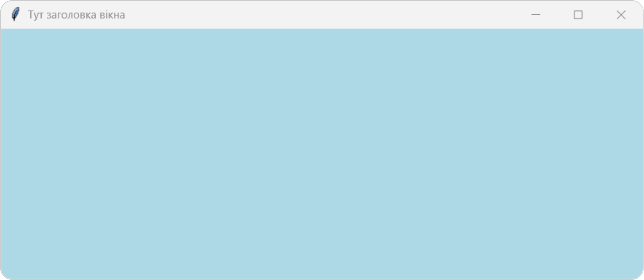

Клас Tk() призначений для створення головного вікна програми. Щоб використовувати його методи та функції, необхідно підключити модуль tkinter до коду. Зазвичай імпорт модуля розміщують у першому рядку коду програми.
from tkinter import * # імпорт бібліотеки tkinter до коду програми
win = Tk() # cтворення змінної win в якій зберігатиметься вікно
win.mainloop() # циклічне оновлення вікна, доки програма не закрита
Вікно Tk() в python є об'єктом. Зміна властивостей та поведінки будь-якого об'єкта здійснюється через змінну за допомогою методів та функцій. В прикладі ми вказуємо, що всі зміни з вікном будемо здійснювати через змінну win (скорочено від windows), якій надаємо значення вікна Tk()
Основні методи налаштування вікна:
from tkinter import *
win=Tk()
win.title('Тут заголовка вікна')
win.geometry('705x319')
win.resizable(False, True)
win.config(bg='lightblue',bd='2')
win.iconbitmap('icon.ico')
win.mainloop()
